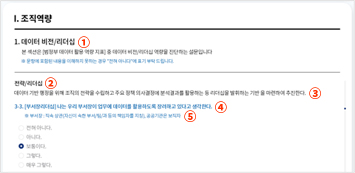

- 진단설문을 시작하기 전에
- 본 진단설문은 우리 기관 및 직원의 데이터 활용 역량 강화 방안 마련을 위한 설문으로 행정안전부 [범정부 데이터 활용 역량 지표]를 준용하여 작성되었습니다.
아래의 화면을 참고하시어 귀하의 생각과 본인 수행 수준을 판단하여 진솔한 응답 부탁드립니다.
- 진단설문 구조 설명
-

- ① 역량
- ② 하위역량
- ③ 하위역량 정의
- ④ 진단문항
- ⑤ 용어 도움말
- 제출하고 나면 수정 및 다시 제출이 불가하오니, 신중하게 제출 해주시기를 바랍니다. 진단설문에 대한 임시 저장이 가능하므로, 제출 전까지는 이어서
진단설문이 진행이 가능합니다. 준비가 다 되셨다면 [다음] 버튼을 눌러주세요.